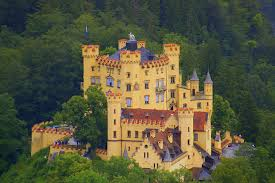

Burg Eltz
Das Schloss Eltz, gelegen in der Eifelregion Deutschlands, ist ein malerisches mittelalterliches Schloss, das auf einem Hügel über dem Elzbach thront. Es stammt aus dem 12. Jahrhundert und ist bekannt für seine beeindruckende Architektur, die sich harmonisch in die umliegende Natur einfügt. Das Schloss wurde nie zerstört, was es zu einem der am besten erhaltenen mittelalterlichen Burgen in Deutschland macht.
Schloss Neuschwanstein

Das Schloss Neuschwanstein, in den bayerischen Alpen gelegen, wurde im 19. Jahrhundert von König Ludwig II. erbaut. Das beeindruckende Bauwerk im Stil der Neoromanik und Neogotik besticht durch seine märchenhafte Architektur und malerische Lage. Mit seinen Türmen und Zinnen erinnert es an ein Märchenschloss und diente als Inspiration für Disneys Dornröschenschloss. Die Aussicht auf die Alpen ist atemberaubend.
Burg Hohenschwangau
Das Schloss Hohenschwangau, in der Nähe von Füssen in Bayern gelegen, wurde im 19. Jahrhundert von König Maximilian II. erbaut. Es liegt malerisch auf einem Hügel über dem Alpsee und beeindruckt durch seine neogotische Architektur. Das Schloss diente als Sommerresidenz der bayerischen Königsfamilie und bietet einen beeindruckenden Blick auf die umliegende Landschaft und die nahegelegenen Berge.
Schloss Heidecksburg

Das Schloss Heidecksburg in Rudolstadt, Thüringen, wurde im 18. Jahrhundert im barocken Stil für die Fürsten von Schwarzburg-Rudolstadt erbaut. Es beeindruckt durch seine prächtige Architektur und opulenten Innenräume. Heute beherbergt das Schloss bedeutende Museen und Sammlungen, die die Geschichte und Kultur der Region präsentieren. Von der Terrasse aus bietet sich ein schöner Blick auf die Stadt und Umgebung.
Schloss Wartburg

Die Wartburg, bei Eisenach in Thüringen gelegen, ist eine imposante mittelalterliche Burg aus dem 11. Jahrhundert. Bekannt durch Martin Luther, der hier das Neue Testament übersetzte, beeindruckt sie mit ihrer historischen Architektur und umfassenden Geschichte. Die Burg bietet atemberaubende Ausblicke auf die Umgebung und beherbergt ein Museum, das die Geschichte der Wartburg und ihrer berühmten Bewohner präsentiert.
Schloss Drachenburg

Das Schloss Drachenburg, nahe Bonn gelegen, wurde Ende des 19. Jahrhunderts im neugotischen Stil erbaut. Es beeindruckt durch seine märchenhafte Architektur mit Türmen und Zinnen sowie seine prächtigen Innenräume. Die malerische Lage auf dem Drachenfels bietet einen herrlichen Blick auf das Rheintal. Heute dient das Schloss als Museum und Veranstaltungsort, der die Geschichte und den Glamour der Kaiserzeit widerspiege